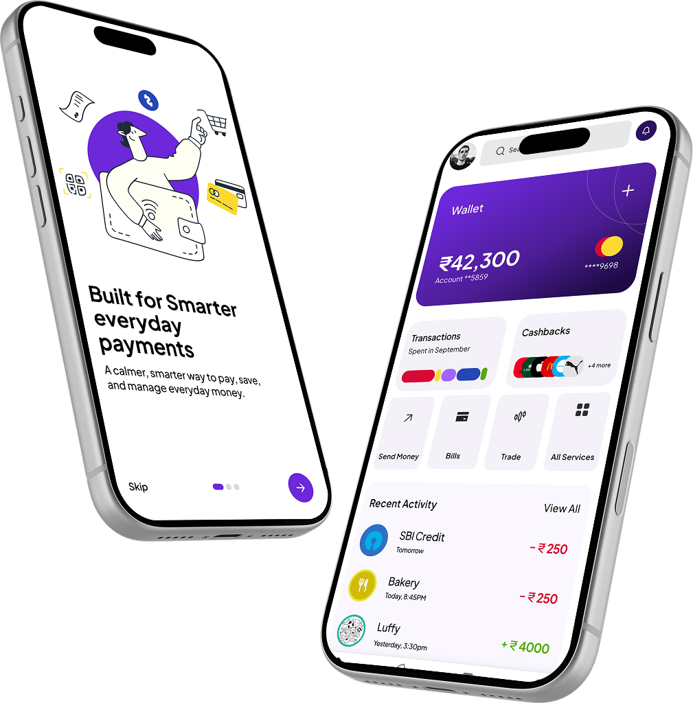

Fragmented financial context
Balances, commitments and transactions exist, but not as one decision-ready picture.
Nexa · Indian fintech · 0→1 concept
A UPI-first money experience designed around how India pays: QR codes, multiple bank accounts and frequent everyday transactions.

Nexa explores the layer after payment: helping people understand which account changed, what remains available and how one transaction affects upcoming commitments—without disrupting the scan-and-pay behaviour they already trust.
Transaction success is visible; its effect on the rest of a person’s money is not.
The comprehension gap after payment
UPI makes moving money nearly effortless, but understanding the consequence still depends on mental calculation across accounts, bills and savings.
Everyday payments may leave one linked bank account while rent, subscriptions, savings goals and family transfers depend on others. A confirmation screen records the transaction, but rarely answers the next question: “What is genuinely safe for me to spend now?”
The opportunity is therefore not another payment method. It is a financial context layer that preserves UPI’s speed while making account choice, remaining capacity and upcoming obligations easier to understand.
How might Nexa preserve the speed and familiarity of UPI while making the financial consequence of each payment immediately understandable?Problem statement
Balances, commitments and transactions exist, but not as one decision-ready picture.
Any added explanation must support—not interrupt—the trusted scan-to-pay flow.
Understanding the payment ecosystem, behavioural context and trust constraints before defining the product.
Secondary research + product analysis
Because Nexa is a self-initiated concept, the evidence base is deliberately framed as ecosystem analysis and design hypotheses—not participant findings.
The strongest opportunity sits after the transaction. People do not need more payment data; they need a trustworthy explanation of available, committed and protected money across accounts.
| Context observed | Risk to understanding | Design implication |
|---|---|---|
| QR payments are frequent and fast | More information may slow a trusted habit | Keep the payment path familiar; explain after success |
| One UPI app can access several accounts | The source of funds becomes easy to overlook | Keep the paying account visible before and after payment |
| Transfers range from small purchases to rent | A flat history treats unequal decisions as identical | Organise activity by purpose, pattern and consequence |
| Bills, goals and family needs compete for cash | Current balance can overstate what is safely available | Separate available, committed and protected money |
A clearly labelled proto-persona used to organise assumptions before primary research.
Ananya Rao · Proto-persona, not a research participant
Digitally confident when paying, but forced to reconstruct her wider financial position after each transaction.
27 · Salaried professional · Bengaluru
Represents a frequent QR payer using multiple linked accounts while balancing bills, savings and family transfers.
When I pay through UPI, help me understand what changed so I can decide what is safe to do next.
Preserving the familiar payment flow while adding clarity at the moments that matter.
Scan → understand → stay in control
Nexa does not ask people to learn a new payment behaviour. It improves the information surrounding the QR journey.
Merchant, amount and payment context are clear before proceeding.
CertainLinked accounts show usable context, not just masked numbers.
InformedThe expected PIN and confirmation pattern remains intact.
EffortlessThe receipt connects the payment to balance, category and commitments.
OrientedThe user can recategorise, move money or inspect the calculation.
In controlTranslating fragmented payment information into a usable money model.
Model → prioritise → prototype
The key design task was deciding what a person needs to understand at a glance—and what should stay one tap deeper.
Available money, committed money and protected money create a simple mental model across accounts.
“What can I spend?”, “What changed?” and “What needs attention?” shape the home and receipt.
The concept links QR payment, post-payment explanation, transaction detail and correction.
The first home screen presented too many banking features at once.
Centred the hierarchy on total balance, Safe to Spend and immediate attention items.
“Safe to Spend” appeared as a number without enough trust.
Exposed bills, savings and buffer inputs with a direct correction path.
Payment confirmation still felt like a generic receipt.
Added paying account, updated state, category and a relevant next action.
A connected UPI and money-management experience designed for Indian needs.
Four parts, one financial picture
Nexa connects the speed of QR payments with the context people need to understand everyday money.
Scan, verify the merchant, choose a linked account and pay through a familiar flow.
Brings balances, commitments, recent activity and attention items into one clear hierarchy.
Explains what remains after bills, protected savings and a personal buffer.
Turns transaction patterns into specific, inspectable observations rather than generic advice.

Testing whether added clarity helps without weakening the speed and trust of UPI.
What the prototype must prove
Success is not more time in the app. It is faster understanding, confident decisions and fewer moments of financial uncertainty.
Task completion, time to comprehension, correction success and perceived trust are proposed measures for future prototype testing. Nexa has not been shipped, so no business impact is presented as real.
The product decision that defines Nexa—and what must be learned next.
Clarity is the product
Nexa is not another payment method. Its value is helping people read their money as clearly as they can make a payment.
Designing for India means treating QR payments, multiple linked accounts, frequent low-value transactions, recurring obligations and family transfers as the core context—not edge cases. The next step is primary research with a range of UPI users, followed by prototype testing of the QR flow, post-payment explanation and Safe to Spend calculation.